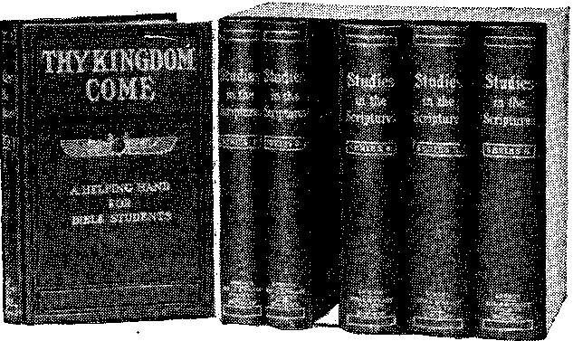

VOL.. V.
NEW YORK CITY
No. 7
Religious and Scientific Gleanings
SAY COLLEGES TEACH HERESY.
Baptist Minister Gives Up Church to
Organise Crusade Against Toronto Higher Critics.
Toronto is to have another alliance. This time it is to suppress higher critics in Toronto University, Knox College, and McMaster.
The promoters declare that McMaster teachings are heresy, that the Scriptural tuition at Knox is destructive, and at Toronto University poisonous.
McMaster graduates are using vigorous language in expressing their opinion of Rev. W. F. Roadhouse’s new role as organizer of the new alliance. Rev. Mr. Roadhouse recently gave up his Baptist pastorate to ally himself with the critics of the Biblical teachers of the universities.
The new organization is to be called “The Alliance of Bible Crusaders.”
The first object of the crusaders is to be “withstanding the present widespread drift from the old foundations, and the belief in the Word of God.”
“All interested,” can become Alliance Bible Crusaders by paying a fifty cent annual membership fee.
The movement is declared by one prominent McMaster man to be “abnormal.” Another McMaster graduate said: “This thing is very unfortunate.” —Toronto World.
TfEW ^iEASKA-TS-MAKING.-
Volcanic Action to Replace Behring Sea With Land, It’s Said.
Permanent alteration in the climate of the Alaskan coast, through shifting of warm ocean currents by lifting of the sea bottom, the opening of new fishing banks of unestimated value, and the eventual closing of Behring Straits, owing also to a rise in the floor of the sea, are among the scientific probabilities now being investigated as the result of the eruption of Mount Katmai.
Various geological parties, and men from several revenue cutters, are exploring the bottom of the sea to determine how far submarine geography has been changed. So far as the earth’s surface is concerned, the eruption is beneficial, the volcanic ash already having stimulated plant growth.
Geologists assert that the tops of submerged mountains which form the Aleutin mountains, are rising steadily, through pressure on the sea bottom from enormous amounts of sediment, and after eventually cutting off Behring Sea, will continue to rise until what is now the sea will be replaced by a great sweep of land.
A large number of government scientists have sailed from Seattle for Seward, there to take passage for Kodiak. “There shall be no more sea.”—Bay City Times.
“O GLORIOUS DAY.”
“Thou hast been faithful— Thou hast borne the cross, The thorns have pierced Thy feet; But now the night is past— The day has come—bright, Glorious Day of endless joy and love. The trial time hath proved thee true And thou art safe, Beloved, In Thy Father’s home.
“O glorious Day, for thee we long! We will be faithful, will the.
Burdens bear, sustained by grace Divine.
In meek submission to Thy holy will, Dear Lord, by faith we clasp Thy hand, As side by side we tread the Narrow Way,
And wait—for it will surely come— Some day, some dear, sweet day; O, tarry not too long!”
“WHERE ARE THE DEAD?”
This article was published in a recent issue of THE BIBLE STUDENTS MONTHLY, Vol. 5, No. 3. The interest aroused and the great demand for copies of it have been remarkable. A sample copy will be mailed to any one free upon receipt of post-card request.
ANCIENT GARDEN OF EDEN
ARABIA THE CRADLE OF MANKIND
"As all in Adam die, even so all in Christ shall be made alive; every man in his own order.”— I Corinthians 15:22, 23.
.A RABIA is accredited with being the XTL ancient Eden, eastward in which was the specially prepared Garden wherein our first parents had their trial—not for a reward of Heaven or a punishment of eternal torment, but for a reward of everlasting life under perfect earthly conditions, or for a penalty of death. Here man, created “very good,” in the image of his Creator, sinned and became subject to the penalty of sin—“Thp soul that slnneth, it shall die.” Here also is Mount Ararat, on which the Ark rested after the Flood, and from which came forth the family of Noah to people the earth afresh. Thus was Arabia twice the Cradle of mankind.
Here is the fertile Mesopotamia, which Father Abraham left at the Divine invitation, to sojourn in Palestine to the north, under promise to become the heir of Divine favor, the father of the faithful, whose now glorified Seed, the great Messiah, has already redeemed the world and is yet to take the Throne of earth and, during the thousand years, conquer sin and death and lift up from degradation and the grave Adam and his race.
This is the same Arabia made famous by the tales of the Arabian Nights, and _where_«ilgp is the tomb of Mohammed, whose followers rival in numbers the followers of Jesus, and still trust in the promise made to Abraham, and, like the Jews, wait for the glorious appearing of Messiah. Like the Israelites they are blind to the fact that, before Messiah could bless and heal and uplift the world, it was necessary that He redeem them with His own life, and select from amongst men a spiritual class to be His Bride and Joint-heir in His glorious Kingdom.
And now as the Day draws near that the Curse shall be lifted from the world, when “the wilderness shall blossom as the rose” and “the solitary place shall be glad,” we behold this land of the most ancient civilization awaking. The ruins of its ancient cities, Nineveh' and Babylon, are yielding to modern research the records of thirty-five hundred years ago, while modern engineers and modern capital are at work upon vast irrigation schemes costing millions of dollars which they tell us will make that land fruitful and fertile as the Garden of the Lord. Are we not thus witnesses of the beginning of the long-promised “times of restitution of all things which God hath spoken by the mouth of all the Holy Prophets since the world began”?—Acts 3:19-21.
Redemption by His Blood.
When could we more appropriately consider the Divine provision for our race than when considering this land, the Cradle of our Race, where the fall took place, where the ruin began which has filled' the earth with sin, selfishness, sorrow and dying? Ah, surely we greatly erred when we supposed that a greater penalty for sin was needed or intended by our Maker than the penalty we are experiencing! What more could man lose than our race as a whole has lost? Created in relationship with God as a son and heir of the appropriate blessings of the Almighty Father, Adam and his race lost that precious relationship—lost Divine favor, Divine communion, Divine care, and were plunged into death condemnation as strangers, aliens, convicts, tarrying in life merely to fulfil the verdict, “Dying, thou shalt die.”
How sternly Divine Justice held to that verdict! How relentlessly, how pitilessly the forces of nature were allowed to play havoc with man in earthquakes, drouths, famines, pestilences and hereditary diseases! For more than two thousand years the great Heavenly Parent showed mankind only His Justice and naught of His Love. And then the first declaration of the Gospel—the first mention that Divine favor would yet rescue mankind from the reign of sin and death—was made, not publicly, not to all of the race, but merely to one man—the friend of God—Abraham. To him it was disclosed as a secret that the great Creator, although permitting Justice to hold full sway in a relentless exhibition of Divine wrath against the sinner, had a loving purpose in His heart which would yet find expression and include all the human family in the blessing it would bring. How astonished we are to learn of such
“A wideness in God’s mercy, Like the wideness of the sea!”
But God gave Abraham words only, “Wonderful words of life”—that in him and in his posterity eventually all the families of the earth should be blessed. But there was not a sign of change so far as the Divine dealings were concerned. Sin and Death were still allowed to reign, and their reign has continued century after century since Abraham’s day. Doubtless it was because God foreknew that approximately four thousand years would intervene before the blessing of the world, that He added His Oath in corroboration of His promise. St. Paul tells us that He so did in order that by these two immutable, unchangeable things—the Word of God_and the Oath of God—we,’ who by faith are become the Spiritual Seed of Abraham, might have strong consolation—we “who have fled for. refuge to lay hold upon the hope set before us” in that Gospel Message which God gave to Abraham.
“Israel Hath Not Obtained.”
Centuries passed. Abraham and Isaac and Jacob, to wnom that promise was successively made, all died; and Jacob on his death-bed handed down the gracious inheritance of the wonderful Promise to his twelve sons, who there became the nation of Israel. The foundation of Israel’s hopes as a nation is that Promise made to Abraham, in which they still trust. The spectacle of a faith triumphing for four thousand years is a glorious one, and it will shortly have its reward.
In due time, at Mount Sinai, God entered into a Covenant with the children of Israel, by which He agreed to bless them and to fulfill in them the Abrahamic Promise that they, as Abraham’s seed, should bless all the nations of the earth. The only condition connected with the promise was that they were to show their fitness to be the Divine channel of blessing to the world and their obedience to the Divine Law which was delivered to them on two tables of stone. Full of joy and faith the Israelites obligated themselves thus.
Ah! much they knew not. They did not realize their own weakness and imperfection through the fall and their inability to fulfil the Divine requirements, the spirit of the Law of their Covenant. They soon found that while the Law said, “He that doeth these things shall live,” they were not able to do those things; and therefore they were all dying like other men. Had God deceived them and entrapped them? No. God’s proposition was simple enough. He was merely teaching them a great lesson—that sin as a disease had taken hold upon humanity, and that, however willing they might be, all were weak and perverse in the flesh and unable to fulfil their good intentions.
Israel’s Promised Deliverer.
As a consolation God assured Israel that He would send the Deliverer, One still greater than Moses who had delivered them from the Egyptian bondage. This greater Deliverer would deliver them from the greater bondage of sin and death, so that they would be able to obey the Divine Law and be used of God in blessing and instructing other nations. This Greater than Moses they were assured would inaugurate a New Law Covenant, based upon better sacrifices than the blood of bulls and goats, a He was known to them as Messiah, the Messenger of the New Covenant. In Him, therefore, they came to hope; for Him they waited; in the prospect of His coming they delighted.
But although the • Law Covenant made nothing perfect—although if did not accomplish the thing Israel had hoped, it did accomplish much. It served to lift that one nation, religiously, high above all the other nations of their day, so that when the time came for God to send His Son into the world to be" man’s Redeemer—■ to die, the Just for the unjust, for man’s reconciliation, as the Atonement for his sin—at that time there were a few thousand saintly Jews who waited for the consolation, the comfort, the blessing which God had promised them through Messiah—release from the bondage of sin and death.
Thus the Law was a pedagogue, a servant, to lead the Israelites to the Great Teacher; and at Pentecost and subsequently, several thousand of them thus led entered the School of Christ— to be His disciples, to walk in His steps, to suffer with Him and later on, in due time, to reign with Him.
Moreover, during the sixteen centuries between Moses and Jesus a saintly class was manifested, all of whose names are written in the book of God’s remembrance. It is not theirs to be the Bride of Messiah; it is not theirs to be counted in as members of th8 Body of Christ, which is the Church, for 'those members nil followed the-Head, none of them preceded Him.
These Ancient Worthies were not begotten of the Holy Spirit to a new nature, to be new creatures in Christ, but “They had this testimony that they pleased God.” They have the Scriptural testimony, therefore, that they shall be accounted worthy of “a better resurrection” than the remainder of mankind, although their resurrection will not be with the Bride of Christ—will not be the Chief Resurrection, to spirit nature, spirit bodies, etc. Those Ancient Worthies will come forth from tlie tomb after the completion of the Church, after her establishment in glory. They will come forth perfect men, of human nature, the image and likeness of God in the flesh, as was Adam. Great will be their degree of honor as they shall be used of Messiah as “princes in all the earth,” for the blessing of Israel and all of every nation, people, kindred and tongue.
Abraham’s Seed the Elect.
But Abraham was to have a still higher Seed, numerically less, for it is written, “Thy Seed shall be as the stars of heaven, and as the sands of the seashore.” That superior Abrahamic Seed “as the stars of Heaven,” a Spiritual Seed must be developed and glorified first, before the blessing can come to his earthly seed.
St. Paul, explaining the situation, says that the Law Covenant was added to fill up the time between Abraham and the proper time for the Spiritual Seed, The Christ. It “was added because . of transgression”—because sin had abounded in the world and so degraded humanitjr that it was necessary to lift up as a standard of righteousness the Law of the Ten Commandments, to take the place of the Divine Law which was originally written in Adam’s character. When he was created in the image and likeness of God Adam needed no Tables of Law to teach him right from wrong, even as God needs none.
St. Paul explains further, saying, “Israel hath not obtained that which he seeketh for, but the Election hath obtained it, and the rest were blinded.” (Romans 11:7.) Israel desired to be the Bride of Messiah—to. have the very choicest blessings which God had to give. And Israel got that so far as its people were prepared therefor. The “Elect” obtained it—a remnant of Israel, numerically small as compared to the whole, were found upon test to be “Israelites indeed in whom was no
(Continued on 2d page, 2d column.)
36itile Btuhents iHoitttilj?
PUBLISHED AT
83 BEEKMAN ST., NEW YORK CITY C. W. HEK, Editor.
Monthly, 12c. a Year. Single Copies, 1c. r—-.......
An Independent, Unsectarian Religious Newspaper, Specially Devoted to the Forwarding of the Laymens Home Missionary Movement for the Glory of God and Good of Humanity.
“MIRACLE DISPUTE ALL TOMFOOLERY” SAYS HALL.
Bolton Hall, counsellor-at-law, of No. 29 Broadway, and son of the late Rev. Dr. John Hall, minister of the Fifth Avenue Presbyterian Church, has written a letter to the Synod of New York, in connection with what he calls “the question of the admission to the ministry of two candidates who disavowed belief in miracles, was decided in favor of one and against the other.”
"We are Presbyterians,” the letter reads, “mostly the descendants of hardheaded, reasoning Scotch people, but we do not realize, I think, how ridiculous we seem to the average man of common sense in disputing about such questions as the story of ‘Jonah and the Whale,’ ‘The Resurrection of Lazarus’ or ‘The Virgin birth of the Savior.* There are numbers of persons who accept these things as true—no one really believes them.
"But whether the miracle tales be true or false is of no consequence whatever. No reasonable man now supposes that any one’s salvation depends upon whether he deemed the evidence of a .miracle sufficient or not. The object of Jesus’s coming was ‘to bind up the broken-hearted, to proclaim liberty to the captives and the opening of the prison to them that are bound’—and to teach men to love one another.
"If a poll were taken of yourselves it would be found that hardly a fraction of our own ministers under forty would say that they believed in miracles. Separately, we cannot say to the congregations that we do not believe, because it would be used as a handle of offense by captious members. It is true that our church is not gaining in proportion to population, and it is true that heretical bodies who deny the miracles are gaining. Let us have done with this tomfoolery of dogmas as a means of salvation and get down to the serious business. of life which is to help mankind to live.”—N. Y. American.
WHOLE WORLD MAD IN FEW CENTURIES, SAYS DR. WINSLOW.
There will be more lunatics in the world than sane people 300 years hence, was the prophecy made by Dr. Forbes Winslow. This prophecy is based upon the present rate of the growth of lunacy as revealed by recent returns.
Dr. Winslow expressed strong disagreement with the statement made at the Eugenics Congress by Dr. Mott, to the effect that the increase in lunacy was more apparent than real, and told a press representative that in making such a statement Dr. Mott apparently referred to London only. Dr. Forbes Winslow said that from his knowledge of the progress of lunacy in all parts of the world he had come to the conclusion that “we are rapidly approaching a mad world.” He added:
“In every part of the world civilization is advancing, and so insanity is also bound to advance. There were 36,762 registered lunatics in 1859, but 135,600 at the present day. That shows the alarming increase.
“If Dr. Mott’s theory is accepted, we shall wake up when it is too late to prevent a further increase. What happened to the pauper class in London, as an alleged proof against the real increase of lunacy, was very much beside the question, taken as a whole. Fifty years ago there was one lunatic in 575 of the population, but now one in 236. At that rate of progress,” he said, “in 300 years’ time there would be more lunatics in the world than sane people.”—Exchange.
MINISTERS NOT PREACHING GOSPEL
Religious circles were aroused over the address of William Lyon Phelps, head of the English department of Yale, scoring clergymen for preaching too much about politics.
. “The main difficulty with the churcSI to-day,” said Mr. Phelps, “is that the people in the pews do not have the gospel preached to them.
“Clergymen ought to learn that the chief duty of a preacher is to hold forth Christianity and not discourse on sanitation, political economy or literature.
“The clergy are afraid to preach! Christianity, partly because they do not believe in it and partly because they are afraid it won’t ‘draw,’ so they substitute lectures on politics and socialism for the preaching of the gospel.” >—Exchange.
{Continued from 1st page, 4th column.) guile”; and these became the nucleus of Messiah’s Bride class.
Gospel Preached First to Jews.
That every “Israelite indeed” might be found, the Gospel Message at first was. exclusively theirs, and the first Gentile convert, Cornelius, was not admitted to Divine favor in this respect until three and a half years after the cross. Yea, still later, when the Apostles preached the Gospel to every creature, to people of every country and nationality, as well as to the Jew to whom it was originally confined, they si ill gave the Jew the preference up to the year A. D. 70, when the Jewish polity perished. St. Paul declared this publicly to the Jews, saying, “It was necessary that the Gospel be preached first to you, but seeing ye count yourselves unworthy of the grace of God, lo, we turn unto the Gentiles, for thus it is written in the Prophets.”
We see, then, that the nucleus of the elect Church which should become the Bride of Christ at His Second Coming was Jewish, and that God’s favor to the Gentiles was His permitting of them to come in and fill up the foreordained number of the elect Church, though only after all worthy Jews had been called and accepted. And now, as Jesus foretold, the Gospel or good news of His coming Kingdom is being preached in all the world “for a witness,” to gather from every nation, people, kindred and tongue the saintly ones to be sharers with the Jewish nucleus in the great honor of becoming Messiah’s Bride and Joint-heir. We are to clearly distinguish between the witnessing of these matters amongst all nations, for the gathering out of an “elect” few, and the blessing of all nations under the Kingdom which will come later on. A failure to see this has caused confusion in many minds.
Heirs of the Promise.
We must never lose sight of the ker
THE ORIGINAL KINGDOM
TO BE RESTORED
"And thou, 0 tower of the flock, * * * unto thee shall it come, even the first dominion"—the kingdom.— Micah 4:8.
AMONG the many internal evidences Seed shall all the families ot the earth proving the inspiration of the be blessed.”
Bible, by the harmony of its teachings through various pens during thousands of years, is its persistent testimony respecting the Kingdom of God. The record of Genesis is that Adam was created in the image and likeness of God and given the dominion of earth. David prophetically repeats the story of man's original endowment With the dominion of the earth and all the lower creatures, saying, “Thou hast made him but a little less than angels and ■ hast crowned him with honor and glory; T-hou madest him to have dominion over the works of Thy hands.” Psalm 8:5, 6. The superiority of man over the lower creation is intimated in the narrative of all the creatures passing before Adam and receiving their names—evidently being fully under his control, not merely by brute force, but by that subtle mental force which is so nearly obliterated in our day through, the fall, but which to some extent is still manifested.
“The Purchased Possession.”
The Scriptural narrative, after pointing out man’s loss of life and loss of the dominion of earth, consistently points out also the necessity for a general redemption—first of all, man’s redemption from the power of the tomb, from death, and secondly, the redemption of his inheritance, the dominion of earth, “all that was lost.” Our Redeemer at His First Advent, we are told, came to seek and to save that which was lost—man and his dominion. We have already seen how the man Christ Jesus became the Ransom for the man Adam, giving a life for a life. And this purchase of Adam’s race included with it all the rights and privileges, honors and dignities, which were lost through the fall. Thus the Apostle sums up the work of our Lord Jesus, declaring to us that what God’s people already enjoy of 'the Holy Spirit of promise is the “earnest (payment) of our inheritance until the deliverance of the purchased possession.” (Ephesians 1:14.) Everything that was purchased by the great Logos, the Son of God—who by taking our nature became our near kinsman—all this is to be, in God’s due time, we are informed, restored to mankind. Thus the Bible account opens with the narrative of our loss of Paradise and of life and of the dominion of earth, and concludes in Revelation with the symbolical pictures of Paradise restored to all the worthy of the race through Him who loved us and bought us with His precious blood.
The Theme of the Old Testament.
When our eyes open to the matter we see readily that the central theme 'of the Old Testament prophecies is the restoration of this original Kingdom lost by Adam’s disobedience. This is the substance of the great Oath-Bound Covenant made to Abraham: “In thy nel of this Gospel Message. The ultimate blessing of the Messianic Kingdom, through the Seed of Abraham, will be to all the families of the earth, but, previously, the Divine work is the calling of the Seed of Abraham, which is to do that work of blessing. The promise was not made to all the families of the earth but to Abraham and his Seed. Hence the heirs of the promise are not all the families of tlm earth, but the Seed of Abraham.
To the saints of Galatia, who had been Gentiles but had accepted Jesus and were trusting to become joint-heirs with God’s dear Son in His Messianic Kingdom, as members of His Bride Elect, St. Paul writes, “If ye be Christ’s then are ye Abraham’s Seed* and heirs according to the Promise.” (Galatians 3:29.) How strange that we should have lost sight of this great inheritance! With our Lord, as Abraham’s Seed, we shall inherit the earth; as it is written, “I will give Thee the heathen for Thine inheritance, and the uttermost parts of the earth for Thy possession.”
No wonder the Apostles frequently reminded the brethren of this great inheritance which God has in reservation for the faithful. No wonder one of them writes, “All things are yours, for ye are Christ’s; and Christ is God’s”! Adam and his entire race are to be turned over to Christ Jesus the Redeemer—purchased by His precious blood. Then we, as His Bride Consort, are to share with Him that great inheritance, and to co-labor with Him in bringing order out of present confusion. Satan is to be bound; all the forces of darkness are to be overthrown and restrained. The light of the knowledge of God, as a glorious Sun of Righteousness, is to arise; and its healing beams are to flood the earth, carrying with them life, peace, joy, rest—to the Jew first, but eventually to every nation, people, kindred and tongue.
It seems remarkable that in our day the subject of the Kingdom of God should be so completely overlooked by the Lord’s people in general, when, every time we refer to the words of our Lord, we should be struck with His frequent references to the Kingdom, the Kingdom, the Kingdom! Not only wete the disciples sent forth to announce the Kingdom, and Himself as the King, but a large proportion of our Lord’s parables related to the Kingdom, and illustrated various features connected with it and its establishment.
The Kingdom that was preached to the Jews was the privilege of being associated with Messiah as subordinate kings, princes, priests, in the great work that the Kingdom was to accomplish in the blessing of the whole world. We all know the result of that preaching, that not many received it— only a few; and that the Lord, in so many words, cast aside that nation which previously had been His peculiar people, saying, “Behold, your house is left unto you desolate. For I say unto you, Ye shall see Me no more until ye shall say, Blessed is He that cometh in the name of the Lord.”—Matthew 23: 38, 39.
A Royal Priesthood, a Holy Nation.
But although the nation of Israel was rejected from being associated with Messiah in the Kingdom work so long promised, the Divine Plan was not by any means changed or altered. The Lord accepted those Jews who were Israelites indeed, to become the nucleus of His Kingdom, and sent forth through them as His ambassadors a message to all the world who should have ears to hear and hearts to obey, making a general invitation to jointheirship in the Kingdom to all who would desire to become His disciples, ■assuring us in the meantime that in all there would be but a Little x lock to whom it would be the Father’s good pleasure to give the Kingdom.—Luke 12:32.
Suffering and Reigning.
Our Lord’s words can only be under-; stood from His Kingdom standpoint. He declares that none can be His disciples unless they take up their cross to follow Him, counting the cost and despising the shame, and forsaking houses, lands, parents and children and all things, even life itself, if this should 'stand in the way of their covenant to follow His example, to walk in His steps. What He meant was that those who would constitute the Kingdom class, those who would sit with Him in His Throne, must thus be associated with Him in the good fight of faith and love and self-sacrifice in overcoming the obstacles of this present evil world.
The common thought that our Lord meant that only the disciples who would take up their cross and follow Him would be saved from eternal torment, or from destruction in the Second Death, is entirely erroneous, inconsistent with facts and the Scriptures, as well as inconsistent with reason. It is only when we, see that the peculiar work of this Gospel Age is the selection of the Kingdom class, that we can see the necessity for the special fiery trials that shall try all those who will be counted worthy of a share in that Kingdom.
The Apostle Peter evidently understood the matter, for on one occasion he said to the Lord, referring to himself and the others of the Apostleship, “Lo, we have left all and followed Thee; what, therefore, shall we have?” The Master answered that in the Regeneration time to come, in the world’s time of regeneration, the “Times of refreshing from the presence of the Lord,” those twelve Apostles should sit upon twelve thrones, judging or ruling among the twelve tribes of Israel, who at that time, we are assured, will again be in prominence under Divine favor and at the head of the nations. Elsewhere the Lord assures us that not only the Apostles but all who love Him more than they love houses and lands, parents and children, self or any other creature, shall thus be marked as overcomers, as His faithful ones, and His promise is, “To him that overcometh will I grant to sit with Me in My throne.”—Revelation 3:21.
Not only did our Lord indicate that His followers would constitute the Little Flock to whom it would be the Father’s good pleasure to give the Kingdom, specified through the Abra-hamic promise, but additionally He taught us that this should be a part of the central theme of our hearts at all times—the Kingdom.
Some, in their confusion of thought on this subject, imagine that it is a Kingdom to which we are to go; but our Lord and all the testimonies of the Word indicate that it is a Kingdom which is to come, and Whose appointed times and seasons for establishment are in the Father’s Hand, and that it is to be established at the Second Coming of the Son of God in power and great glory.
Daniel the Prophet pictures the time of the setting up of this Kingdom. In one of his prophecies he shows the time of the First Advent of Messiah and how He was cut off in death, but not on His own account, but for our sins. But he proceeds to tell us how, when present Gentile governments shall have run their course, when Gentile Times shall have expired—and his prophetic periods covering this point we believe end in 1914 A. D.—then he tells us, in harmony with our text, that the “first .dominion”. shall- come to the great “Tower of the flock,” to Christ.
The Millennial Kingdom Near.
To those who have given the subject careful thought and investigation the evidences seem clear that the prophesied “seven times,” or 2,520 years of Gentile dominion of the world, is nearly at its close. If this period of “Gen*, tile Times’ began with Nebuchadnec-zar, at the time of the overthrow of God’s typical kingdom, when the prophet declared that it was overturned until He should come whose right it is, and if that event occurred in the year 606 B. C., it follows that the whole period of Gentile dominion will expire in October, 1914 A. D., according to the accepted chronology of the world.
The four universal empires delineated by the prophet have had their day, and we are now living in what the prophet designates the days of the “feet,” the toes of Daniel’s image, and soon, according to the prophet, the whole image of earthly government is to be wrecked. Other Scriptures show us that the wreck is coming through the uprising of the people in anarchy, “Every man’s hand against his neighbor’s.” (Zechariah 8:10.) Looking out we see the spirit of selfishness and strife on the increase, and it seems every way probable that the ensuing few years will bring so-called Christendom to social, political and financial destruction.
For the glorious Epoch and its glorious work let us continue to prepare as members of the prospective Royal Priesthood, the Seed of Abraham, through whom the blessing of the Lord is to be poured out; and let us continue to pray, “Thy Kingdom come, Thy will be done on earth as it is done in Heaven,” and let us more and more realize that this Kingdom promise is another of the evidences, the proofs, of the homogeneousness oz the Word j of God. I
n THE THIEF ON THE CROSS. T
What did Jesus mean by His a words, “Verily I say unto thee to- u p: day, thou shalt be with Me in Para- ti JJ dise”—if Paradise, lost 6,000 years L 71 ago, will not be restored until the t Second Coming of Jesus and the es- L, pj tablishment of His Kingdom?
The full answer to this question Lj we shall be pleased to send you free "4 *4 upon receipt of postal-card request, u a A-iJ”ess, Bible t Tract Society, 17 E jJ Hicks St., Brooklyn, N. Y. [J
UNTO THE THIRD AND FOURTH GENERATION
RADICAL CHANGE IN THE VIEWS OF SCIENTISTS CAUSED BY MENDEL’S EXPERIMENTS
Exodus 20:5; 34:7; Numbers 14:18; Deuteronomy 5:9.
“WHL is it that a man of genius will
*’ not infrequently become the father or grandfather of perfect dunces? Why do a fair-haired husband and a fair-haired wife sometimes beget a dark-haired baby? Why are there such differences in size, appearance or intelligence between the children of the same identical mates?
“If we observe the so-called ‘vagaries of Nature’ in the plant and the animal world, we observe that the dwarf pea, sprung from tall ancestors, breeds true to dwarfness; that the progeny of a black and white rabbit are in one case all black and in another all the wild, gray color; that two white peas being crossed may give a purple flower; that two hairless plants may revert to the hairy form.
“We used to call such phenomena ‘curious reversions.’ We believed first that through slow evolution certain characteristics of certain types had either become overdeveloped or obliterated, like the lizard’s third eye, the bat’s wings, the tadpole’s tail.
“We also believed that acquired characteristics, a love for music, a taste for strong beverages, would be transmitted to all of one’s descendants.
“Now come the Mendelian experiments, proving apparently that heredity and evolution are mere dreams, that species are immutable and that Nature’s vagaries are merely Nature’s logical efforts to extricate the original type from the tangle of cross-breeds due to man’s tampering.
“Even should the far-famed ‘missing link’ show up in the wilds of Oceania, where it is strongly suspected of keeping itself in the strictest incog., we would no longer have to deplore our descent from a simian ancestor.
“The man who gave a concrete form to such theories was an Austrian monk by the name of Mendel, born in 1822. The result of his biological experiments were embodied in a modest paper read before the natural history society of a little Austrian town Brunn. He also wrote a few letters on the subject to the botanist Naegeli.
“Unfortunately, pamphlet and letters were written at a time when Darwin’s theories, as to the origin of species, had become the scientific fad of the day. And what chance had the modest —sld-'X'iO-nk--of being even noticed? He died inglorious in 1884.
“Not until a few years ago did R. C. Punnett, an English scientist with an inquisitive turn of mind, look over Mendel’s records of experiments. So appalled was he by their importance that he published a book, christening the new theory ‘Mendelism.’
“The world lent an indifferent ear to the new leitmotive; but by and by the Englishman dinned Mendelism into the consciousness of the scientific world. At the present day there is a big English magazine devoted to the new science and called ‘Mendelism.*
“Let us now turn to Mendel’s own account of his experiments on plants and on animals. In one series of experiments he concentrated his attention on the height of certain plants. He first made crosses between giant peas and dwarf peas. It mattered not which was the pollen-producing and which the seed-bearing plant; in all cases tall peas resulted from the cross. For this reason Mendel called the tall pea ‘dominant,’ and the dwarf ‘recess ive.’
PASTOR RUSSELL’S “STUDIES IN THE SCRIPTURES”
BIBLE AND TRACT SOCIETY, Publishers, BROOKLYN, N. Y.
THESE Most Helpful BOOKS are PRINTED in 19 LANGUAGES and sold without profit so as to enable all to have them.
MORE THAN SEVEN MILLION COPIES
are in the hands of the thinking public! All should have them!
Vol I—“The Divine Plan of the Ages” Vol. IV—“The Battle of Armageddon”
Vol. II—“The Time is at Hand” Vol. V—“The Atonement”
Vol. I'll—“Thy Kingdom Come” Vol. VI—“The New Creation”
A marvelous Library of religious knowledge and history of mankind
THE ENTIRE SET OF SIX VOLUMES (over 3,000 pages) NOW $2.65 POSTPAID SPECIAL OFFER: With each set of STUDIES IN THE SCRIPTURES purchased at the reduced price of $2.65 we will also give as a premium one year’s subscription to THE WATCH TOWER, Pastor Russell’s sixteen page, semimonthly religious journal. ORDER TO-DAY from Publishers.
“The next step was to collect seeds of the new plant and to sow them in the following year. When this was done it was found that both tall and dwarf plants appeared in the offspring. Each individual was either frankly tall or frankly dwarf, and no intermediate appeared, the proportion of tall to dwarf being three to one. The following year seed from the dwarf peas gave only dwarfs; seed from the tall gave a large proportion of tall and a few dwarfs.
“In the following year tall seed brought forth tall plants only, dwarf seed dwarf plants only. The reversion to the prototype was complete. In the process, however, the tall plant, the dominant, appeared three times as frequently as the recessive.
“The experiment was tried with various animals, and it was found, first, that after several generations the individual reverted to the pure type of either the male or female ancestors, and, secondly, that one type was dominant—that is, produced many more individuals than the recessive type.
“Crossing colored and white mice produced in the long run pure colored and pure white, with a majority of colored. The Angora fur of some rabbits was found recessive to the normal short fur. The rose comb which occurs in certain breeds of poultry, such as Hamburgs or Wyandottes, behaves as a dominant to the high serrated single comb of the Leghorns.
“Freakish cases in which one of the parents was in a markedly abnormal condition were considered. Japanese waltzing mice were crossed with normal mice. The ‘waltzers’ are driven to circle round sometimes for hours by a painful malformation of the labyrinth of the ear. After a couple of generations the crosses bred true to either the normal mouse or to the ‘waltzer,’ the latter being recessive to the former.
“Interesting experiments were made to ascertain whether crossing increased or diminished the resistance to disease.
“Some varieties of wheat are susceptible to the attacks of a fungus that causes ‘rust.’ Some are immune. When ‘susceptible’ and ‘immune’ were crossed, every hybrid was susceptible to ‘rust.’ The following year the hybrid became differentiated, the ‘rusty’ and ‘immune’ plants being in the apparently universal ratio of three to one.
“We have, then, the explanation of facts which Darwin refused to consider as very important. He held that ‘freakish variations’ in the production of species would rapidly become swamped by intercrossing with the normal form. He considered that species had been and were being built up by the process of natural selection. As a matter of fact, no species is being built up, and deviations from the prototype are corrected in the course of three generations,
“Before experiments can be made on _,uman beings the Mendelian discovery can be applied practically to the improvement of animal breeds. We know for sure that in most cases a cross means greatly increased vigor for the progeny. Breeders, however, are very shy in making crosses for fear of breaking up and losing the desirable combination of characters found in the original strains.
“Mendel’s discovery may reassure them on this point. In three generations breeders can reproduce the parental types with all the increased vigor resulting from a cross. We must also revise our conception of a ‘pure breed.’ Until recently we said that the criterion by which we could judge the purity of breed was the pedigree of the individual. Today we know that a plant or an animal can be pure breed, not only owing to its ancestry, but' in spite of its ancestry.
“Where the problem becomes fascinating, however, is where it touches the mooted question of heredity, and here again it upsets absolutely our previous notions. Man being the slowest breeding’ animal, observations are difficult, and only imperfect statistics can be relied upon at the present day to supply evidence.
“The study of certain diseases, however, in the course of several centuries fortunately enabled scientists to establish heredity tables. One of the most interesting cases observed is that of the transmission of ‘brachydactily.’ In people affected with this malformation the joints of the fingers and toes are two instead of three, and the whole body presents a stunted appearance.
“It has been shown that this condition is unfortunately dominant to the normal state, which means that ‘brachydactily’ in one of the parents will affect the progeny in the proportion of three abnormal to one normal descendant. The normal descendants will, however, breed true to normal, while the abnormal children will give birth to both abnormal and normal children in the proportion of three to one. •«
"Another interesting case is that of the eye color. All colored eyes have pigment at the back of the iris. In addition to this there is frequently
COVETOUS CONVERSATION
Hebrews 13:5.
THE Authorized Version of the Bible uses the word conversation in the broad sense of conduct, including, not only the words, but the looks, and the acts of life. The force of the text, therefore, is, Let your conduct be without covetousness. How could a covetous thought affect our conduct? As some Christians see others possessed of larger wealth or larger opportunities in the service of the Lord, of better conveniences than they possess, or who are better looking than themselves, etc., they have a spirit, or disposition, of covetousness, dissatisfaction with what Divine providence has shaped for them.
When we say, “what Divine providence has shaped for them,” we do not mean that one should make no endeavor for advancement. A certain amount of ambition is laudable. The ambition against which the Apostle is speaking is that of a dissatisfied heart, mind, overlooking the blessings already possessed and desiring the things that he has not. Rather, such a one should say, God could grant greater blessings to me if He chose. I am His child and what, therefore, He grants me in the way of reward for my endeavors must be all right. I shall not envy others their possessions; but I shall wait for the Lord and believe that what He gives me is best for me, and much better than anything I could carve out for myself.
Covetousness is a desire to have, keep, enjoy—especially applied to something that belongs to another and which we do not possess. The principle of covetousness is a principle of selfish desire. It may manifest itself in two ways: First, when it extends to another man’s goods; and, second, when it pertains to things already in our possession; This is specially true of Christians, who have given themselves and all they have to the Lord. From the moment of such consecration all the powers possessed or to be possessed belong to the Lord; and to seek to use these for one’s self and to refuse to use them in the service of the Lord would be holding back what belongs to the Lord according to our own arrangement with Him. What distribution should be made of whatever one may have, as the lord’s steward, is to be left to the individual himself.
Some of the Lord’s dear children fail to realize their privileges- of (1) sacrifice, and (2) the cultivation of the spirit of contentment and generosity. some yellow-brownish pigment on the-front of the iris. Where it is absent the color of the eyes is blue, gray or violet. Highly pigmented eyes are-dominant to those in which pigment is absent. When one of the mates has-dark eyes and the other blue eyes, the proportion of dark-eyed and blue* eyed descendants will be three to on$ the dark-eyed hybrid begetting only dark-eyed, the blue-eyed hybrid begetting three ‘dark-eyed’ to one ‘blueeyed.’
“While Mendel’s theories throw no light upon the origin of species, at least they seem to prove against Darwin the immutability and the lasting individuality of species. We may have to believe in a distinct act of creation for each and every species, but we can no longer assume that the difference between species arose from the accumulation of minute and almost imperceptible differences. Neither can we believe that a drop of tainted blood will taint the family blood for generations. We know who will bear the taint and who will not.”—N. Y. Times.
The Bible Proved True.
The heading to this article with the references are ours. The Monk Mendel and those who are now exploiting his findings and theories of course never thought of the Bible supporting their teaching. But let us put the matter the other way about and say that these scientific gentlemen are supporting the Bible and proving it true. Their experiments, they tell us, show that special peculiarities, virus in the blood, etc., will work itself out in the third generation; the Bible says the third or the fourth. We shall stick to the Bible.
Let those who prefer take Darwin and boast of their monkey parentage of gradual development. We prefer the Bible statement, that by nature we were children ef God, created in His image and likeness, from which we fell through disobedience and to which the willing and obedient will be privileged to return “in due time” through the merit of the redemption-sacrifice finished at Calvary. Let us rejoice in the special invitation now ours !of becoming members of the Body of the great Messiah, who provides both the Redemption and the Restitution of Adam and his race, and who will destroy in the Second Death all who shall wilfully and intelligently spurn Divine favor.
There are some who, after being well fed on spiritual manna, permit a selfish craving or a covetous spirit to interrupt their fellowship with the Lord to some extent, hankering for earthly, fleshy, good things, forgetting the wisdom of their Leader, the Lord, and that His love, which has thus far delivered them and fed and led them, is still with them, the same as ever. Sometimes the covetousness is a repining against their lot in life, a desire for more ease and comfort and wealth and social influence than are within reach. Sometimes it is a protest against their share of the aches and pains of the groaning creation and their inability to get rid of these. Sometimes it is a protest against the illness and death of a loved one.
How unwise! Should not those who have been fed on the spiritual manna realize that all of Spiritual Israel’s affairs are under the Lord’s special supervision? Their petitions should be for spiritual gifts, including patient endurance and heart content-ment, with heartfelt thanks for blessings already received.
IN THEE I TRUST.
Only for Thee, Lord, would I live, While here below;
It is my great delight, Thy love to> show;
Use me, then, first as Thou seest best—,
Not mine to choose, but mine to trust and rest.
Only to Thee would I resign my will, ’tis all
I have to give, and Lord, it seems so small
A thing to offer unto Thee,
Who didst lay down Thy life for me.
Only to Thee, my Lord, I’d come when trials press,
Assured that Thou alone canst comfort best;
My deepest griefs, I need not to Thee tell,
Thou understandest all, dear Lord, so well!
’Tis only Thou canst send the peace which soothes my pain,
That bids my weeping cease, and sunshine follow rain,
My every fear remove and doubt dispel—
I rest on Thee, and know that all is well.
Jennie G. Shamp.
more* to be esteemed as the ages of eternity shall roll on. The world, which now sees not this crown and hears not the Calling from on High, will by and by, under the ministrations of the Kingdom, be blessed by the oblitera-
in His promises respecting these crowns, which will 'be distributed to the faithful at His Second Coming. “Without faith it is impossible to please God.” “This is the victory that over-cometh the world, even our faith.” If
“When the Chief Shepherd shall be manifested, ye shall receive a crown of glory that fadeth not away.”—I Peter 5:4.
THE crown is an emblem of honor, dignity and authority, and when the word is used figuratively it carries much the same meaning, including the thought of reward. Created in the image and likeness of God, mentally, and morally, Father Adam was the first king of the earth, and was given dominion over the earth and all things therein. Describing his glorious condition the Prophet David says, “Thou hast made him a little lower than the angels; Thou crownedst him with glory and honor, and hast set him over the works of Thy hands—the beast of the field-; the fowl of the air; the fish of the sea.”—Psalm 8:5-8.
Not realizing fully the grandeur of his position as the earthly representative of the Creator “crowned with glory and honor,” Father Adam was not sufficiently careful to maintain his high standing and relationship with the King of kings. He disobeyed the Heavenly Over-Lord, came under the ban of His displeasure, and His sentence was the forfeiture of his crown and kingdom and life.
The Apostle sets forth the matter explicitly, saying, “By one man’s disobedience sin entered into the world, and death by sin, and thus death passed upon all men, for all are sinners.” It will be noticed that we entirely ignore as wholly unscriptural "the theory, common to all the creeds of Christendom, to the effect that Father Adam and his race not only lost the dominion of earth, but were sentenced to an eternity of torture at the hands of demons. We reject this teaching of the Dark Ages as being thoroughly inconsistent with reason, contrary to Scripture and repugnant, both to the Justice and Love, the Wisdom and Power of the Creator. For the Scriptural proofs on this subject we refer you to a little pamphlet which, we supply free, entitled, “What say the Scriptures about Hell.”
The crown of Divine favor and honor gone, mankind made the best of its fallen condition, and forthwith there beggiM a strife amongst men as to whififa should be the greatest, the most fioh»jrable—which should wear the crowns. The pages of history for six thousand years are filled with the records of the strife amongst men for the crowns of earth. Nations and families have been divided, millions have been slain and the greatest imaginable exertion put forth and -enormous wealth squandered in the seeking of these crowns of earth. We review them: The crowns of the Pharaohs of Egypt were first in prominence, surrounded by a host of smaller ones. Later the prominent positions went to the Assyrians and Babylonians, the Israelites under David and Solomon sharing the glory for a time. Next the Medes and Persians were the chief ■crown wearers in the world. Still later,, under Alexander the Great and his Successors, the Grecians held the
IN EVERYTHING GIVE THANKS.
Dear Lord, with sorrow I confession make
That while with joy I suffer for Thy sake,
Yet an the cares with which my days abound,
Where I should smile, I fear I often frown.
In days gone by I’ve murmured o’er and o’er,
And unkind words have left me feeling spres
Those whom I come in contact with eaeh day,
Disturb me oft by things they do and say.
.And thoughtless actions have left such a Ming
I could not find it in my heart to sing.
Lord;, I’ll be honest with myself and Thee,
I haye not been as sweet as I should be.
And I have said, “Too hard the wind doth blow,
Too (Hot the day, too much of rain or snfiw,”
And tho‘ at times I’ve checked the hasty word,
Still,, in my heart rebellious murmurs stirred.
And I have thought that I could grow in grace
Much better, were I in another’s place.
Lord, to this, whole long list I guilty pled’d;
And I am grieved o’er it, I am indeed;
And I am come to make a Vow to Thee,
first place amongst these crown wearers. Then came the Caesars of Rome, and subsequently the Popes, and later still a division of the crowns amongst the great Powers of Europe.
More Noble Titan Others.
Amongst those who for the past six thousand years have been moved by the nobler sentiments and have sought the nobler crowns are the philosophers, teachers, artists, physicians and musicians. These have sought victories and won crowns along nobler lines than did the kings and nobles, and, proportionately more enduring are their crowns of honor amongst men. We would like to include in this list religionists—the heathen priests and Christian ministers; but although we recognize pre-eminently grand characters amongst these, we cannot recognize them as a whole as deserving crowns of honor amongst men, because not only amongst the heathen but amongst Christians, Protestants as well as Catholics, Greek and Roman, they have too often sought their crowns of honor by cultivating the su-perstitutions of those whom they affected to enlighten. However, it must be admitted that the same charge of fraud and deception could be brought against many who have sought crowns along the lines of healing the sick, medicines, and other sciences and" philosophies, falsely so called. The poor world has been deluded in paying homage and honor to many rascals, many deceivers, who by and by, when the light of the Messianic Age shall be turned on, will be found covered with infamy.
Qur own day has witnessed a new crown-seeking movement—crowns of wealth and the influence associated therewith. Ours is pre-eminently the day of millionaires and multi-millionaires, and what gorgeous crowns they wear! Few of their owners know just how to wear their crowns to the .best advantage. Prominent and notable examples amongst these crowned heads-are a few whose millions are being used philanthropically for the establishment of colleges, libraries, and in social uplift efforts.
For Which Should We Strive?
To all thus seeking for a Worthy' crown, an enduring one, we commend the admonition of the Apostle in our text. He speaks of a crown of glory that fadeth not away. Is not that the kind on which you and I, dear brother and sister, have set our hearts?
Several things are in favor of the Heavenly crown:
First—All who strive for it are sure to obtain it—not merely because of their striving, but because of the Lord’s appreciation of their efforts, and because, therefore, He is gracious unto them through the Redeemer, and imputes to them all the righteousness and victories they desire and are striving for.
Second—This crown “fadeth not away.” On the contrary it will grow more and more valuable, more and
That in the future years, whate’er shall be
My portion, trials, cares, vexations, pain,
Dear Lord, I will not murmur nor complain.
And I will say when I arise each morn, This day my Lord wants me to overcome,
“In everything give thanks,” this is His Word;
And I will school my heart to sweet accord.
I’ll thank Him for the sun, and for the rain;
I’ll thank Him for the sorrow and the pain;
And in the things which try my patience so
I’ll thank Him that I have a chance to show
How Sweet and Kind and Loving I can , be,
How much His Holy Spirit dwells in me.
Dear Lord, I’ll trust Thee tho’ I do not know
Why I should walk the path I’m called to go.
I’ll give Thee thanks whatever be the way
Which Thou shalt lead me in from day to day;
Relying on Thy grace to see me through,
Lord, this is what I’ve promised Thee to do.
Rebecca Fair Doney
tion of their present conquests and the faith be a living one, a real one, it crowns and ambitions, and the placing will impel to the activity, the knowl-before them of the grander, the nobler edge, necessary to victory. Our strife
ones—the recovery of the crown of
Adam lost in Eden and redeemed for the world by our Saviour, and to be made known to mankind, to be brought unto them—brought within their reach during the Millennium. As the world will then be uplifted out of the sin and degradation and death conditions of the present to righteousness and life (the wilfully evil being cut off in the Second Death), the knowledge of the crowns for the Church, secured during this Gospel Age by the overcomers, will be made known to the whole world of mankind, and all shall ultimately recognize, not only the glorified Jesus, but also the glorified members of His Church then with Him in the work of blessing the world. How unfading a crown of glory is this which the Lord proposes to give to all those who espouse the cause of righteousness and, to the extent of their ability, walk in the footsteps of the Son!
Third—Those who would strive for this crown of glory must not expect it in the present life. The striving is to be done here, the crown of glory is to be received there. True, some glory has come to the Lord’s faithful ones already, but not “the crown of glory” which the Apostle Peter here declares shall be given at the manifestation of the chief Shepherd, our Lord Jesus. When He was among men, because of His difference of standpoint and effort, He was of no reputation, even among the religious rulers. Today the whole world, heathen and Jew, nominal Christian and true, honor the name of Jesus, and in a certain sense crown Him with glory who once was crowned with thorns.
But many of those who now honor the Master do not do so from the standpoint which Jesus Himself enunciated, to the Pharisees when He said, Ye garnish the sepulchers of the Prophets and deplore the murderous spirit of your fathers, yet are actuated by the same animosity to-day toward those of the same faith and spirit with the prophets. Matthew 23:29-33.) Similarly among those who sing of Jesus, “Crown Him Lord of all,” there are many who hate and oppose those crown seekers who to-day are striving to walk in the footsteps of Jesus. Truly the Master said, “Marvel not if the world (including the nominal church) hate you; ye know that it hated me before it hated you. If ye were of the world the world, would love its own, but ye are not of the world, for I have chosen you out of the world, therefore the world hateth you.” The same spirit prevails respecting all the Lord’s followers—those who are honored to-day were generally dishonored and spoken, against in their own day.
It is well, then, that those who seek this Heavenly crown should remember the Apostle’s words, “Through much tribulation shall ye enter the Kingdom.” If they do not consider the crown worth “much tribulation” it is because the eyes of their understanding are not properly opened to discern the lengths and breadths and heights and depths of the glorious character and Plan of God under which these crowns are proffered. is not against our fellow man, as in the case of those who seek the corruptible crowns of earth, political, financial, social. We strive against sin and the great Adversary, whose snares we recognize more clearly than do others.
Crowns for All the Called.
He knew and thus intimates that the world in general would only strive and sacrifice for the things that could be seen with the natural eye, the things of this present time; He knew that the worldly wise would say, “A little in hand is worth much in prospect;” He knew that those who realized most keenly their own insufficiency and weakness in the great battle of life, and the hopelessness of their ever gaining any great prize in the earthly struggle, would be the ones who would most appreciate the proffer of the Heavenly crown, and for such He specially intended it, as He declared, “Chiefly the poor of this world, rich in faith, heirs of the Kingdom.”
What our text speaks of as a crown of glory, other Scriptures speak of as the crown of life. It is both, as the Apostle explains. The reward of the overcoming Church, who battle faithfully against sin within and without, who are fully consecrated to the Captain of their Salvation in thought and word and act, is to be “glory, honor and immortality.” Romans 2:7.
That much the obedient of the world in the Millennial Age may expect, for the promise is that our Lord Jesus came to seek and to save that which, was lost—to restore mankind to life and to all the glorious qualities of mind and of body possessed before the fall and to deliver to the restored race the “purchased possession”'—the dominion of earth.
The Cost of These Crowns.
None can hope for the crown of glory who cannot exercise faith in the Lord Jesus Christ as his Redeemer, and faith
Brethren, sisters, at whatever cost of -self denial, social ostracism, disdain of the world, misunderstanding of friends, we may gain this great prize, the Crown of glory, it will be cheap. Let us lay aside every weight and run with patience the race set before us.
“THE LORD IS MY SHEPHERD.”
The Prophet David wrote the 23d Psalm concerning himself; but in his words there is still deeper signification, namely, that Jehovah is the Shepherd of the antitypical David—The Christ, of which Jesus is the Head and the Church His Body.
In proportion as any are in an attitude of mind in harmony with the Lord they are out of harmony with their present environment, in which the great Adversary is seeking their destruction, under conditions unfavorable for their spiritual development as the Lord’s “sheep.” Foxes, wolves, lions and even cattle have means of defense and offense; but the sheep has practically none. It seems to have no judgment; therefore, the sheep is dependent on the shepherd. In other words, it is out of its environment if away from the shepherd. God provided for man’s protection, but by reason of sin the race got into the wilds and became exposed to various difficulties Which otherwise would not have been man’s lot.
Those who are the “sheep” will .come back into harmony with the Lond, As represented in our text, the .Church class comes back in the present 'time. We all recognize,, as the days go by, how necessary is the Divine care. As we come to see the Divine Plan, we see that “all who are of this fold,'*’ at .those who will come into harmony with God, will have this care; and that eventually there shall be one Shepherd and one flock.
Our Lord Jesus is the representative of the Father. Humanity, as the Lord’s sheep, went astray. 4&M of Adam’s posterity are now astray. 'The Great Shepherd sent His Son £qr- the lost sheep. He is seeking thfcrr -and will ultimately find all who belong to this true flock. He is, therefore fin the highest sense of the word, the Bishop, or Shepherd of our souls, the Good Shepherd who laid down His life for the sheep. •--------------
In our day when the evil .spirits seem to be trying very hard to get into close communication with humanity, we learn of what is called the “clair-audient power.” Suggestions are made to the person having this power that he has a great favor from God in being able to hear what others cannot hear. Usually he becomes puffed up, thinking that he is in special favor with God and the angels. Then the fallen angels are very liable to take advantage of his wrong thought and to seek to obsess him. We have tried to guard people from this very condition of things; and from time to time we hear of those who are helped. Only a short time ago we had a letter from a lady who had thought that a godly influence was being exercised upon her, whereas later she found that it was a malevolent influence to bring her into slavery of mind. But the voice referred to in Isaiah 30:21 we understand to be the voice of God. The Scriptures, written in the past for our admonition, constitute this voice. This voice is behind us in the sense that the history of the centuries is behind us. So we are to hearken to the voice that comes through the Apostles and Prophets; and as we hearken, we recognize that it is the voice of the Lord, pointing the way in which we should go.
But as we hearken to the past we hear also the voices of false prophets; as, for instance, the voice of Satan, the great Adversary of the past. The voice of God said, “Ye shall surely die.” The Adversary’s voice said, “Ye shall not surely die.” At one time all of us were dead in sin. Some of us were blessed as we obtained the true information and followed in the «way God directed. Many of the so-called “fathers” of the past, we find, do not give the same voice that Jesus and the Apostles and Prophets .gave. We are to guard against all such voices and to listen for the Shepherd’s voice; to look for the righteous arrangements made for us. We are not to investigate anything which would not seem to be the voice of God, but which tends to deceive, to alienate the sheep from the Shepherd.